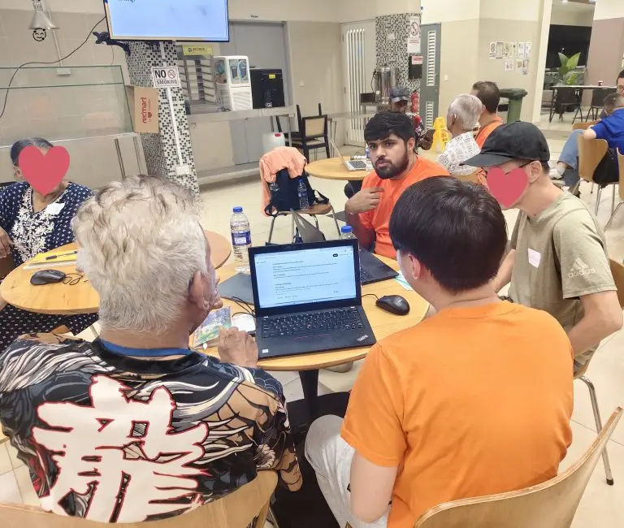
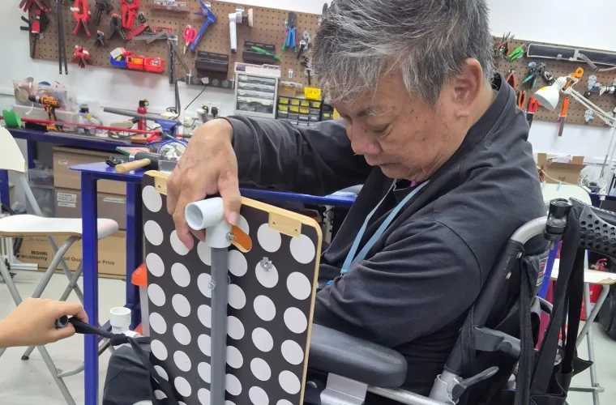
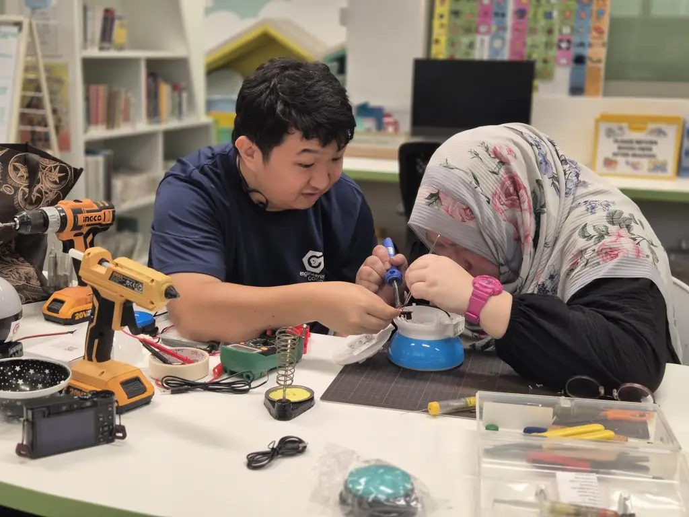

You Give Access. We Engineer Possibilities.
From 1st April 2026 to 30th September 2026, Engineering Good is running Engineering Possibilities 2026 (EP2026),a six-month campaign to build a more caring, cohesive, and digitally inclusive society.
Your donation to our Engineering Possibilities fundraising campaign will help us:
✨ Support our Digital Inclusion Programme, where we:
- Refurbish and redistribute laptops to learners from disadvantaged backgrounds
- Deliver digital literacy workshops to equip learners with practical, relevant skills
- Support upskilling so individuals can pursue further education, secure employment, and build greater financial independence for themselves and their families
✨ Support our Assistive Technology Programmes, where we:
- Equip persons with disabilities with affordable, appropriate assistive tools that improve social, educational and employment outcomes
- Coach youths and technical mentors to design and build assistive tools: embedding accessible design into their future professions
- Train social service practitioners, Special Education educators, and caregivers to encourage independence and creativity for their clients and loved ones
✨ Scale our initiatives to respond to emerging needs, such as:
- Equip Family Coaches and parents with digital safety strategies to protect children online and manage excessive screen time
- Launch new problem statements under our Tech For Good Accelerator Programme to co-create innovative solutions that support persons with disabilities in areas such as daily commuting and inclusive sports
Together, these efforts strengthen community resilience by empowering individuals, families, and partners to support one another through technology and inclusive innocation.
Every Gift Creates Possibilities for Years
Your contributions do more than fund devices and programmes. It makes progress possible.
$50 : Helps defray the cost of replacement parts for a refurbished laptop, extending its lifespan and impact.
$ 200 : Subsidises the cost of providing a refurbished laptop to someone in need.
$ 1,000 : Supports the prototyping and development of an Assistive Technology project co-created with the disability community.
Kindly make your generous donation using PayNow to:

UEN: 201408320W
Alternatively, Internet banking (FAST) or bank Telegraphic Transfer (TT) to:
DBS Bank Account Name : ENGINEERING GOOD LTD
DBS Bank Account No. : 072-115493-5
DBS Bank Swift Address : DBSSSGSG
Please add reference: EP2026
This will allow us to track and process your donation more efficiently for Tote Board EFG matching grant.
To receive an e-receipt for your donation, please email finance@engineeringgood.org
This fundraising campaign is supported by Tote Board Enhanced Fund-Raising Grant and donations made towards this EP2026 Fundraising Campaign will be kindly matched by the grant. Tote Board’s EFR grant supports charities, like Engineering Good, in doing more to serve the vulnerable communities in Singapore.
Engineering Good Ltd (EG) is a Singapore-registered charity that brings together a community of staff, volunteers, donors, sponsors, and supporters with diverse skills, including technology and engineering, to serve disadvantaged and disability communities. We support these communities by enabling access to digital education, economic opportunities and helping them overcome daily challenges through innovative humanitarian engineering solutions. Our vision is to engineer a better and more inclusive world.



